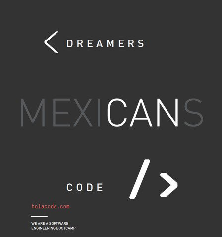

Efrain Vasquez Arias

List of Projects:
- cookie-recipe
- -hello-world-
- efrain-vasquez.github.io
Description of Projects:
1. cookie-recipe project:
This projest is a recipe for the best chocolate chip cookies. It is written in HTML and contains CSS.
2. -hello-world-
This project is my first website and is written in HTML.
3. efrain-vasquez.github.io
This project is the current project that you are viewing which is written in HTML and contains CSS.
About Me:
My name is Efrain Vasquez. I was born in Michoacan, Mexico. I lived in the United States from the age of 3 months till august of 2018. I have a background in construction. I have a year of college education.
The reason i choose to join Holacode was that i am very interested in the tech field, especially on the relationship it has on influcing and impacting social interactions in society.
In my free time i like to read, listen to music, try new restaurants, visit new and interesting architecture, go to museums, and watch movies.